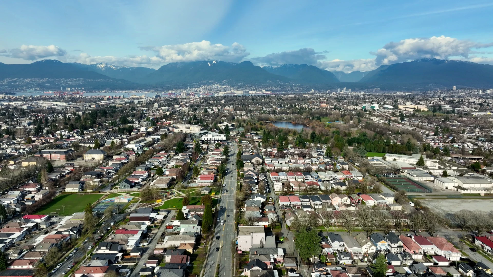

Kensington- Cedar Cottage.
One of the last parts of Vancouver where the corner shop, the lake and the bus all sit within a few minutes' walk.
Everything measured in minutes, not kilometres.
 Trout Lake, two blocks north
Trout Lake, two blocks north
Trout Lake
Swimming from July, the Saturday farmers market year-round, an off-leash field, and the community centre and ice rink at the north end. It is the reason people move onto these blocks and the reason they stay.
Victoria Drive
Not a designed high street, a working one. Portuguese and Italian delis, a Vietnamese grocer, two bakeries that have been there longer than most of the residents, and coffee that does not require queueing.


Ten minutes to The Drive
Commercial Drive to the west, the 20 at the corner, and two SkyTrain stations within a short ride. Downtown in about twenty-five minutes without touching a car.
Parks & recreation
- Trout Lake / John Hendry Park 2 min
- Trout Lake Community Centre 4 min
- Kensington Park & pool 11 min
- Clark Park 9 min
- Grandview Park 14 min
Everyday
- Trout Lake Farmers Market Saturdays
- Victoria Drive shops 1 min
- Commercial Drive 10 min
- Kingsway & Knight 12 min
- Nanaimo SkyTrain 12 min
Schools
- Charles Dickens Elementary 7 min
- Laura Secord Elementary 10 min
- Sir Charles Tupper Secondary 13 min
- Windermere Secondary 16 min
- Vancouver Community College 15 min by bus
Walking times are approximate and measured from the corner of Victoria Drive and East 23rd Avenue.
Everything within a few streets.
Parks, schools, the shops on the Drive and the 20 bus, drawn from live map data. Filter by what matters to you.
Register for
first access.
Four homes, released together. Register for floor plans, pricing and a private preview before we open to the public.
Victoria Haus
Victoria Drive at East 23rd Avenue
Vancouver, British Columbia
604.555.0123 · hello@victoriahaus.ca